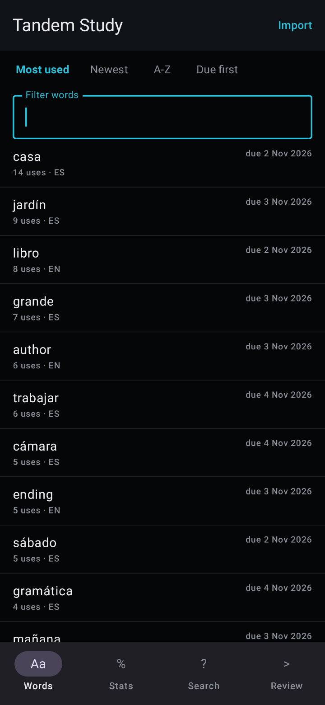
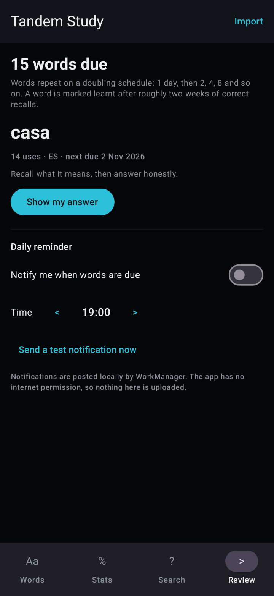

01
Required
Bypass PairIP checks
Skips PairIP's APK signature and Play licence checks, which otherwise stop a re-signed build from starting. Any patched Tandem build needs this one.
Morphe patches — XIONDIGITAL
Android patches, built for Morphe. Five for Tandem, one for any A to Z.
Each patch is a real change to the app's own dex — documented down to the method it anchors on and the exact code it injects. No forks, no rebuilds, no guesswork inside the patcher.
01 / The collection
Tandem: Language exchange, net.tandem 6.38.0 — nineteen method
anchors across classes.dex,
classes2.dex and classes4.dex,
plus ten package-name literals the clone patch rewrites. Amazon A to Z,
com.amazon.atozm, any version — one method anchor, two theme
styles, and a manifest rewrite for the optional clone.
Skips PairIP's APK signature and Play licence checks, which otherwise stop a re-signed build from starting. Any patched Tandem build needs this one.
Turns on Tandem's own dark theme, regardless of the system dark-mode setting. Uses the app's existing theme switch rather than recolouring anything by hand.
Removes Tandem's community ad slot and stops the bundled AppLovin MAX and Meta Audience Network SDKs from requesting ads.
Stops the bundled Adjust attribution SDK from initialising, so no install, session or event attribution gets sent.
Installs the patched build under its own application id — app.xiondigital.tandem
by default — so it sits beside the official app instead of replacing it. Provider authorities,
the signature permission, the WeChat task affinity and Tandem's package literals move with it.
Universal: applies to any version of com.amazon.atozm. Opts the
app's themes into Android's automatic dark transform and sets night mode before the first screen
exists, so the React Native interface is dark even when the phone is in light mode.
Installs the patched A to Z under its own application id —
app.xiondigital.atoz by default — so it sits beside the
official app. The six provider authorities, the app's runtime permission and the launcher
label move with it, and the Amazon SDK permission declarations a re-signed build cannot
own are dropped.
The interface is React Native on Expo, painted from a 119 MB Hermes bundle that has no dark
palette — no theme to switch and no source to rebuild. Android's Force Dark transform is the only
thing that reaches those pixels, and AOSP gates it on three conditions the patch sets:
forceDarkAllowed on the theme, a Light parent so the theme does not
switch the transform off in night mode, and uiMode night applied by
AppCompatDelegate at the top of
MainApplication.onCreate(). Both edits are additive, the app id is
untouched, and the patch fails loudly if a future build moves either anchor.
Clone package is the opt-in counterpart: it rewrites the application id, the
six provider authorities, the app's own runtime permission and the launcher label, and drops
the Amazon SDK permission declarations that would otherwise make Android refuse the install
with INSTALL_FAILED_DUPLICATE_PERMISSION while the official app
is on the phone. What a new application id cannot carry over is Play services registration,
FCM targeting, attestation verdicts and verified App Links — all bound to the original package
and signing certificate.
02 / Install
You need Morphe Manager and a stock APK — Tandem 6.38.0, or any Amazon A to Z build. That's it.
Open the add-source link and confirm it in Morphe, or add
XiONDiGiTaL/MorphePatches by hand. The seven patches then
appear inside Morphe.
Pick a stock Tandem 6.38.0 (versionCode 11568) APK or APKM — any
other version is refused instead of being patched blindly. For Amazon A to Z, pick any version:
the dark-mode patch is version-agnostic, and the arm64 APK is the one a 64-bit-only phone runs.
Patch, then install the re-signed build. Leave Bypass PairIP checks on — a re-signed build is rejected at startup without it. Enable Clone package if you want it to install next to the official app rather than replace it. Heads up: in the 2026-11-04 device test the patched build still stopped at Tandem's licence gate, so these patches do not produce a runnable app yet.
Import
patches-<version>.mpp straight into Morphe Manager from the
latest release
— one bundle for every app here, with no source needed.
03 / Compatibility & checksums
Each release page lists its bundle's size and SHA-256 — check yours before you patch anything.
| Apps | Tandem (net.tandem) · Amazon A to Z (com.amazon.atozm) |
|---|---|
| Versions | Tandem 6.38.0 · A to Z any version |
| Input | APK or APKM |
| minSdk | Tandem 32 · A to Z 24 |
| Patcher | Morphe 2.1.0 |
| Anchors | Tandem 19 methods + 10 literals · A to Z 1 method + 2 styles + manifest |
| Download latest release ↗ |
patches-<version>.mpp
size and SHA-256 on the release page
|
|---|---|
| Inside | Every app's patches in one file — Morphe lists only the ones that match your APK |
| Declares | Patcher-Version: 2.1.0 |
| Per app | Tandem/patches.mpp · AmazonAtoZ/patches.mpp — one app's patches on their own, built at the same version |
The release asset is canonical — the workflow builds it, attaches it and regenerates the patch list from it. The per-app bundles inside each app's folder are the same sources at the same version, for a direct single-app import.
04 / Releases
Every push to main tags the next patch version, builds the bundle and attaches it to the release.
| Version | Date | Bundle | Contents |
|---|---|---|---|
| v0.1.0 baseline |
2026-11-13 | patches-0.1.0.mpp | Seven patches for two apps in one bundle: the five Tandem patches (6.38.0 · 6.12.0) and the two Amazon A to Z patches (any version). Renumbers the collection onto the 0.1.x line |
Versions move by one patch number at a time — 0.1.0, 0.1.1, 0.1.2 — whether the change adds a patch, fixes one or adds an app, so no number is skipped and the number no longer implies what is inside. The v1.0.x and v1.1.x tags were retired when the collection was renumbered; their history stays in git. Only patch bundles are distributed here — never original or prepatched application packages.
Tandem: the bundle applies to the APKMirror 6.38.0 and 6.12.0 APKMs — all five patches complete,
the patched dex was decompiled to confirm every replaced body and the injected night-mode call,
and with Clone package enabled the installed id, provider authorities, signature
permission and task affinity are renamed as documented. It has also been run on a device
(SM-S918U, Android 17): the clone installs as its own app, but Tandem's licence gate opens Google
Play and the process dies inside libpairipcore.so before the UI.
Amazon A to Z: both patches were applied to the real 6.0.5098.0 arm64 APK with the same engine.
Dark mode came to one class changed and 1,325 values re-encoded, with the injected night-mode call
decompiling ahead of invoke-super; the clone build renames all six
authorities, leaves one permission declaration and labels the launcher differently. Neither has
been run on a device yet.
That is why every patch is still listed as Experimental. When a build survives
launch on hardware, that status changes — not before.
05 / Companion app
Vocabulary, statistics, search and spaced review need a database, an algorithm and a screen — things a dex patch cannot add. They ship as a separate app instead.
Tandem already hands you your history: Profile → Settings → Download my data. Tandem Study imports that archive into a local database and builds the study material from it.
It has no INTERNET permission, so nothing it imports can leave
the device, and it never reads or writes Tandem's own data. The importer follows Tandem's
export format; it has not yet been tried against a full real-world export.

